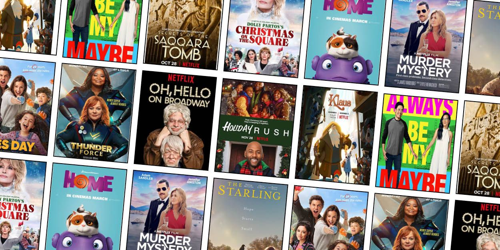

About Me
Hey, I'm a first-gen student passionate about where data, creativity, and impact meet. Ever since I first fell in love with infographics and simulation games as a kid, I turned my passion into constantly exploring how technology drives smarter decisions. I love transforming data into meaningful stories — my skills are strongest with Python, SQL, Tableau/Power BI and Excel. Outside of analytics, I’m deeply committed to community: leading events on campus that inspire others, mentoring students in data skills, and creating spaces that celebrate culture and innovation at Northeastern.
What Inspires Me
I draw inspiration from a mix of culture, storytelling, and creativity — whether it's the balance themes in Avatar: The Last Airbender, the world-building in Marvel, or my Ghanaian roots that shaped my discipline and drive.

